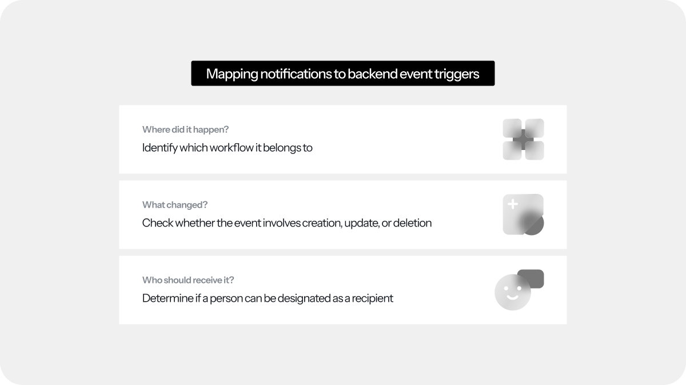
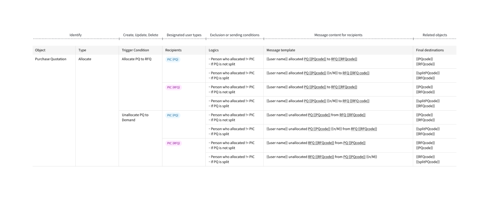
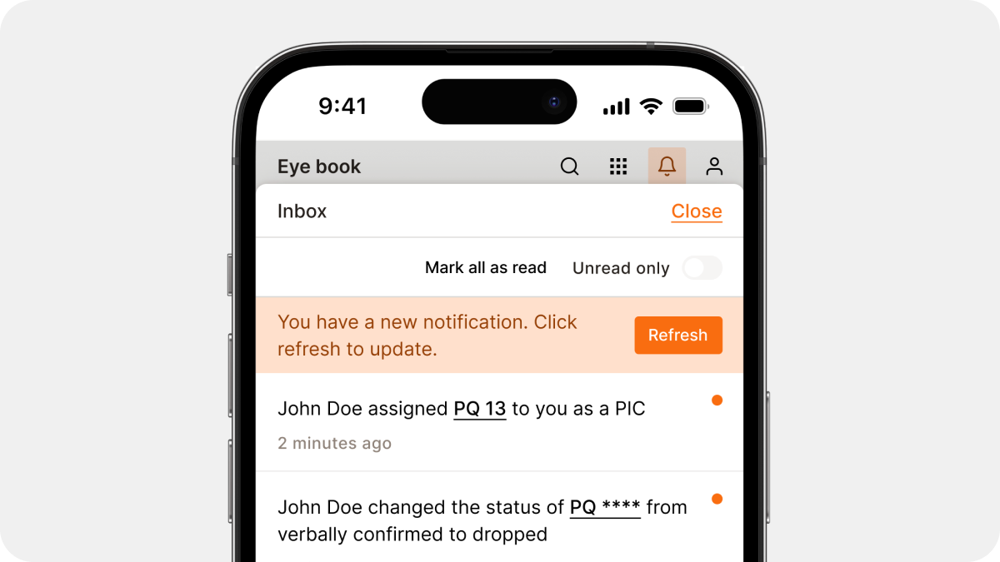

Tridge
Inbox Notification
Keeping everyone in the loop
As the service added features that mirrored real trade workflows, users found it harder to track what happened where. I proposed the inbox as one place to see every message and activity across the service.
The work started from the notification logic, not the interface.
Problem
Updates got lost across the service. Users found it harder to track what happened where.
Approach
Before choosing interface patterns, I defined the notification logic first.
Solution
Notification logic that scales across features and follows real trade workflows.

Notification logic
Designing who gets what, when
To reflect how workflows connect, I built the notification logic on three questions. Where did it happen? What changed? Who should know? Each answer maps to a backend event trigger.
Notification cases
28 cases in one workflow
The request for quotation and purchase quotation workflows depend on each other. Each notification was defined by object, trigger and recipient. It then branched by object state. I mapped every possible combination in a spreadsheet and narrowed it down to 28 cases for the purchase quotation workflow alone.

Inbox interface
Making the logic visible
Each message says who did what and links straight to the task, so users can act on it right away. Data masking hides details users aren't authorised to see. New updates load only when users refresh, so edits in progress aren't overwritten.

Usability testing
Testing accuracy and context in real scenarios
Access in the system depends on each person's role. I ran a role-play pilot with the project team, each of us acting as a different role in real trade tasks. Every notification followed its trigger and recipient rules. None were missed or sent twice.
Next plan
Measuring it in real use
With real users, I would track how quickly people act on a notification, which ones get ignored, and whether they still ask colleagues for updates.